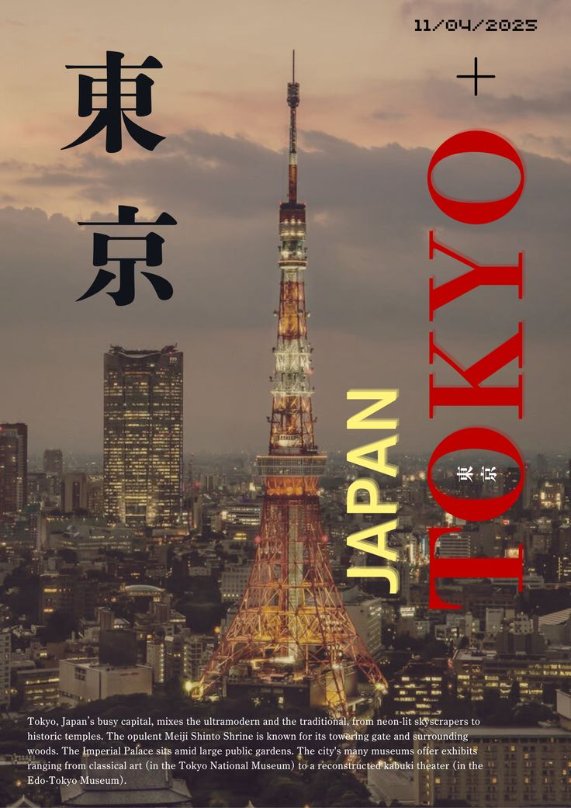
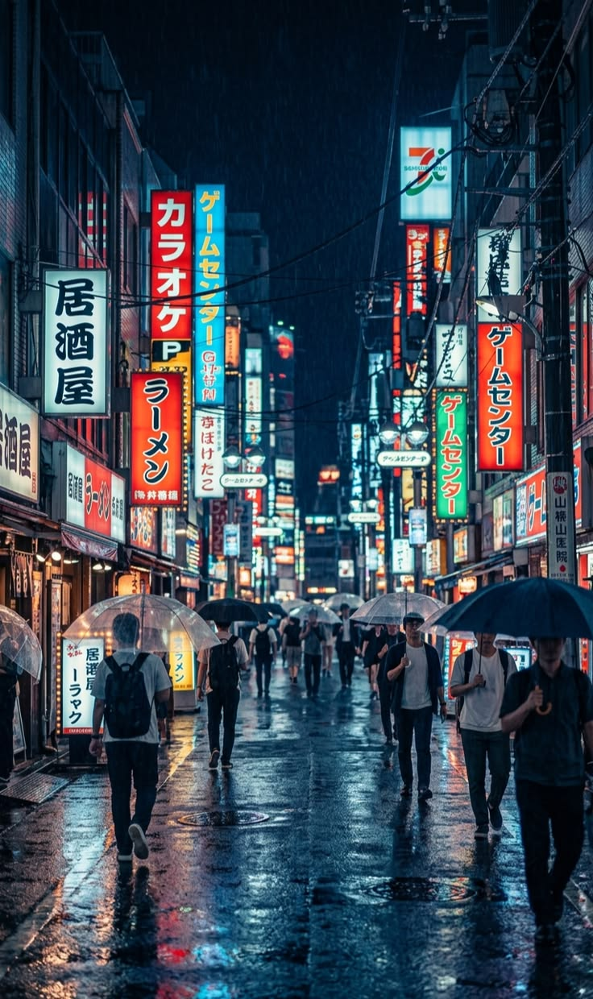

Japão para Visitantes
Um guia introdutório para te guiar em uma jornada de descobertas pelo Japão.
Um guia introdutório para te guiar em uma jornada de descobertas pelo Japão.

Tóquio, capital do Japão, é uma das maiores e mais dinâmicas metrópoles do mundo, reunindo mais de 30 milhões de pessoas em sua região metropolitana. Reconhecida por sua eficiência, segurança e inovação, a cidade oferece uma experiência urbana única, marcada por uma organização quase impecável e um profundo respeito coletivo pelas normas sociais. Um dos aspectos que mais chamam a atenção em Tóquio é o seu sistema de transporte público. Extremamente pontual e abrangente, ele permite que moradores e visitantes se locomovam com facilidade por toda a cidade. Trens e metrôs são limpos, silenciosos e bem sinalizados, mesmo para estrangeiros, embora o idioma japonês ainda seja predominante. A cultura local valoriza o silêncio e o respeito ao espaço alheio, o que torna a experiência de deslocamento bastante tranquila. A segurança é outro ponto de destaque. Tóquio é frequentemente considerada uma das cidades mais seguras do mundo, com baixos índices de criminalidade. É comum ver pessoas andando sozinhas à noite ou deixando pertences em locais públicos sem preocupação. Esse cenário reflete não apenas a eficiência das leis, mas também os valores culturais profundamente enraizados na sociedade japonesa, como respeito, disciplina e responsabilidade coletiva. O custo de vida pode ser elevado, especialmente em áreas centrais, mas há opções para diferentes orçamentos. Desde lojas de conveniência acessíveis até restaurantes sofisticados, Tóquio consegue equilibrar luxo e praticidade. As famosas “konbini” (lojas de conveniência) estão por toda parte e oferecem refeições rápidas, bebidas e serviços diversos a qualquer hora do dia, sendo uma parte essencial do cotidiano local. A cidade também é um polo global de tecnologia e inovação. Empresas japonesas e internacionais utilizam Tóquio como base para desenvolvimento de novas soluções, o que se reflete no cotidiano, com máquinas automatizadas, pagamentos digitais e uma forte presença de eletrônicos e robótica. Ainda assim, essa modernidade convive lado a lado com tradições antigas, visíveis em costumes diários, festivais sazonais e na etiqueta social. Culturalmente, Tóquio é extremamente diversa. Apesar de ser uma cidade moderna, mantém fortes influências históricas e sociais. O comportamento da população tende a ser mais reservado, com interações formais e respeito à hierarquia, especialmente em ambientes profissionais. Para visitantes, compreender regras básicas de etiqueta como tirar os sapatos ao entrar em certos ambientes ou evitar falar alto em locais públicos pode fazer grande diferença na experiência. O clima em Tóquio é outro fator relevante. A cidade possui quatro estações bem definidas: verões quentes e úmidos, invernos frios porém geralmente secos, além de primaveras e outonos considerados os períodos mais agradáveis. A primavera, em particular, é marcada pela floração das cerejeiras, um fenômeno cultural importante no país. A alimentação cotidiana é equilibrada e variada, com forte presença de arroz, peixes, vegetais e sopas. Mesmo fora de restaurantes tradicionais, é possível encontrar refeições completas e nutritivas em supermercados e lojas de conveniência. Além disso, a preocupação com a apresentação dos alimentos é um traço cultural marcante. Por fim, Tóquio se destaca pela sua capacidade de adaptação. É uma cidade que nunca para, sempre evoluindo e se reinventando, mas sem perder sua identidade cultural. Para quem deseja conhecer o Japão, compreender Tóquio é essencial, pois ela representa, em muitos aspectos, o equilíbrio entre tradição e modernidade que define o país.

Tóquio apresenta uma concentração ainda maior de pontos turísticos do que aparenta à primeira vista, distribuídos entre diferentes regiões e estilos. Além dos locais já mencionados, há diversos outros espaços relevantes que ampliam a experiência do visitante. No campo cultural e histórico, o Palácio Imperial de Tóquio é a residência oficial da família imperial japonesa. Embora o acesso ao interior seja limitado, seus jardins e áreas externas são amplamente visitados e oferecem um ambiente mais silencioso em meio ao centro da cidade. Outro local significativo é o Templo Zojo-ji, que combina arquitetura tradicional com a vista da Tokyo Tower ao fundo, criando um contraste visual característico da cidade. Para experiências relacionadas à cultura contemporânea, o teamLab Borderless (ou exposições similares da equipe teamLab) destaca-se como um museu de arte digital imersiva, utilizando luz, movimento e interatividade. Ainda nesse contexto, o Mori Tower abriga galerias e um observatório com vista panorâmica da cidade. No bairro de Akihabara, o turismo é voltado à tecnologia, cultura otaku, animes e jogos eletrônicos, sendo um dos principais centros desse tipo no mundo. Já Harajuku se destaca pela moda jovem, cultura alternativa e ruas com forte identidade visual, como a famosa Takeshita Street. A região de Shinjuku concentra arranha-céus, centros comerciais e vida noturna intensa. Ali também se encontra o Edifício do Governo Metropolitano de Tóquio, que oferece um observatório gratuito com ampla vista da cidade. Para quem busca experiências mais tradicionais de comércio e gastronomia, o Mercado Externo de Tsukiji continua sendo uma referência, mesmo após a transferência do mercado principal para Toyosu. É um local conhecido pela variedade de alimentos frescos e culinária típica. Na área de entretenimento, o Tokyo Disneyland e o Tokyo DisneySea são destinos bastante populares, especialmente para famílias, oferecendo parques temáticos com alto nível de imersão e organização. Outro ponto relevante é Roppongi Hills, um complexo urbano que reúne arte, compras, gastronomia e vida noturna, sendo frequentado tanto por moradores quanto por turistas. A cidade também possui aquários, centros interativos e espaços voltados à ciência e inovação, como o Miraikan, que apresenta exposições sobre tecnologia, robótica e o futuro da sociedade. A variedade de pontos turísticos em Tóquio permite uma exploração aprofundada e personalizada. Cada região oferece uma proposta distinta, fazendo com que a cidade funcione como um conjunto de múltiplos destinos integrados em um único espaço urbano.